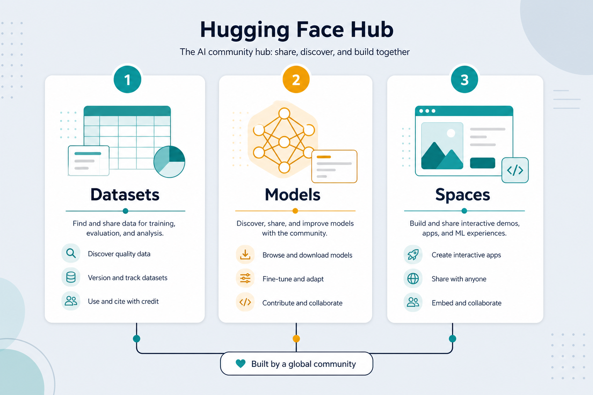

Hugging Face · dataset + Space
GitHub for AI: Datasets, pretrained Models, and Spaces — shorten the path from idea to a usable model.
Standing on others' work
Scratch is expensive
Pretrained + light fine-tune beats training from zero.
Labeled data ready
load_dataset(...) — one line to a training set.
Demo in minutes
Spaces host Gradio/Streamlit with optional GPU.
Key ideas
Datasets
Labeled corpora ready for Trainer or your own loop.
Models
BERT, GPT, ViT… fine-tune instead of scratch.
Spaces
Push a demo → UI + API endpoint.
Keywords: huggingface · datasets · spaces · fine-tune · Read: notes/huggingface.md
Illustration

Typical fine-tune path
Load data
datasets.load_dataset(...)
Load model
transformers AutoModel + tokenizer
Train
Trainer API or PyTorch/TF loop
Publish
push to Hub / deploy Space
Fine-tune beats scratch
Less data
Reuse knowledge from large pretraining.
Less time
Hours instead of weeks on a GPU.
Read the card
License + intended use before commercial work.
From Hub to use
HF + Kaggle
Hugging Face
Models + datasets + Spaces.
Kaggle
Free GPU notebooks + competitions.
Often combined
HF model + Kaggle GPU notebook.
Before you ship
License
Check commercial restrictions on the model card.
Tokenizer match
Always use the tokenizer that matches the model.
Eval leak
Don't fine-tune on your test set.
Borrow, fine-tune,
share.
notes/huggingface.md — then kaggle.md for free GPU hours.
Open note →